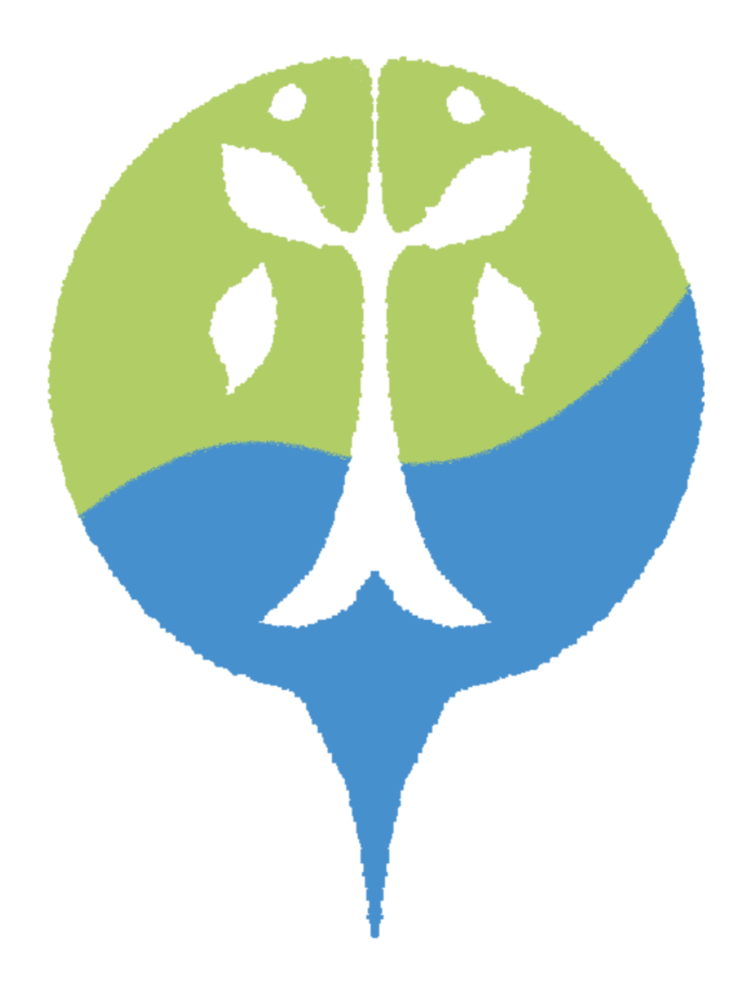
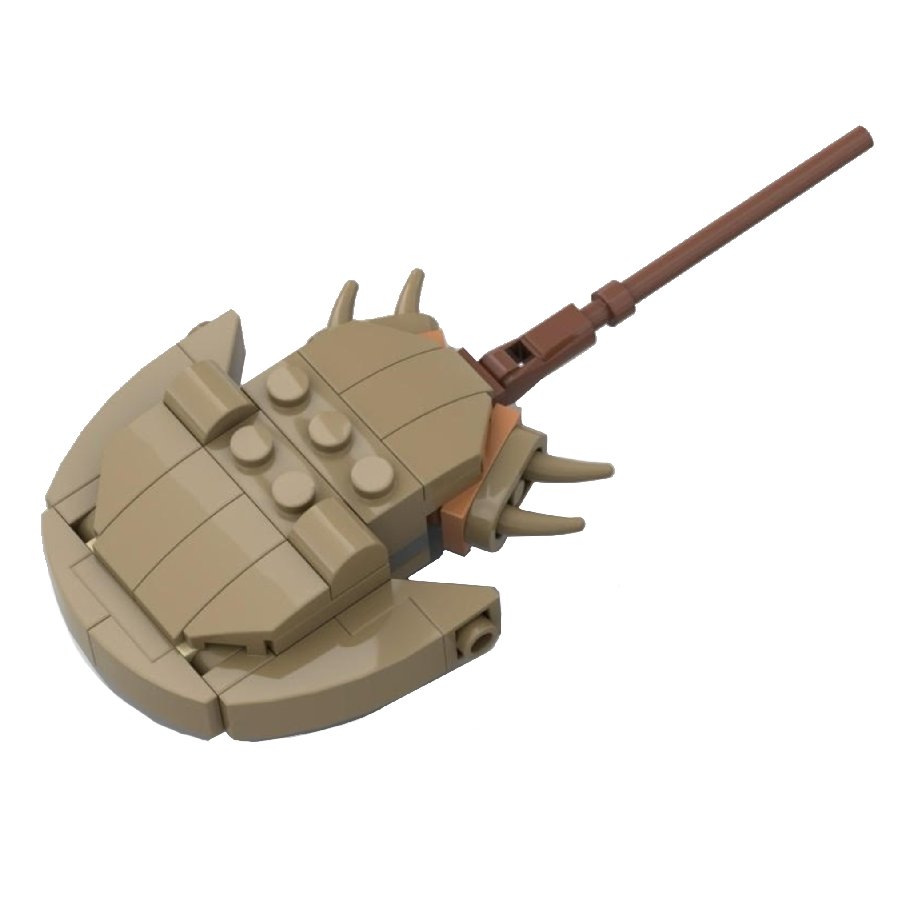

ABOUT
カブトガニを、
まちのまんなかに。
笠岡市は、長年まもってきたカブトガニをまちのシンボルにしています。環境のバロメーターとして、全国に発信します。
自然を守り、生きものが減るのを止めて、回復へ向かわせる。その「ネイチャーポジティブ」を、企業・市民・研究者・団体・行政がいっしょに進めるきっかけにする一日です。
そして12:45、メインホールでネイチャーポジティブ宣言を読み上げます。カブトガニがいる4つのまちの市長が話し合った、そのすえの約束です。その場に居合わせてもらうことが、このフェスティバルのいちばんの願いです。
INFORMATION
- 日時
- 2026年11月15日（日）10:00 – 15:00開場 9:00
- 会場
- HAGIHARAブルーシーホール笠岡市民会館／岡山県笠岡市六番町1-10
- 入場
- 無料出入り自由。途中から来ても大丈夫です
- 主催
- 笠岡市 市民生活部 環境課共催・後援は確認中です
CHECK
一部、事前予約や整理券がいります
レゴのワークショップは整理券（10:00から先着順）。カブトガニ検定は 9:20 スタートなので、朝いちばんに来てください。
ほかはすべて10:00から
例外は2つだけ。カブトガニ検定が 9:20 – 9:50、レゴのワークショップが最終回15:00からで 15:40 まで。
JOIN US
出展する人たち
自治体
- 西条市
- 伊万里市
- 杵築市
- 笠岡市
事業所ほか
- 萩原工業
- 生化学工業
- エフピコ
- 天野産業
- 笠岡商業高校
- ブルー・オーシャン事業
- NP公認アンバサダー
- カブトガニ博物館
- 中国電力
- レゴ社
SCHEDULE
全体スケジュール
場所によって開いている時間がちがいます。まずここを見てください。
- 開場受付はピロティ
- カブトガニ検定3階 研修室／9:50まで
- ぜんぶスタートメインホール／ホワイエ／レゴ／中国電力／飲食／家庭ごみ相談
- メインホール 終了
- ホワイエ・飲食・中国電力 終了
- フェスティバル終了
- レゴ 最終回 終了
15:00でフェスティバルは終了ですが、レゴブースだけ15:40まで
最終回は15:00からの40分。ホールもマルシェも終わったあとの、いちばん静かな回です。
PLACE & TIME
- メインホール10:00 – 13:15／ステージ・サミット
- ホワイエ10:00 – 14:00／展示・物販
- ピロティ9:00 – 14:00／受付・家庭ごみ相談会
- 第1会議室10:00 – 16:00／レゴ
- 第2会議室10:00 – 14:00／中国電力ワークショップ
- 研修室（3階）9:20 – 9:50／カブトガニ検定
- 東側駐車場10:00 – 14:00／飲食ブース
MAIN HALL
メインホール
スケジュール
10:00から13:15まで。こどもの発表から、市長たちの話し合い、そして宣言まで。出入り自由です。
- カブトガニクス
- 開会・趣旨説明
- レゴのカブトガニで環境を考えるワークショップ参加者によるプレゼン
- 開会のことば栗尾市長
- 来賓あいさつ
- 神内小学校の活動発表地元のこどもたちによる報告
- NP公認アンバサダー発表
- 転換
- 環境省のお話ほかのまちの事例紹介
11:50 – 12:50 ／ HERE
カブトガニがいるまちの市長が、笠岡にあつまります。
- 西条市
- 伊万里市
- 杵築市
- 笠岡市
それぞれのまちの保護の取り組みを持ちより、これからの海と干潟について話し合います。そのすえに、まちとしての約束をこの場で読み上げます。
- カブトガニ環境サミット各市の取り組み報告／ネイチャーポジティブについてのディスカッション／生化学工業のプレゼンもこの中で
- カブトガニ環境連携宣言まちどうしで力を合わせる約束
ネイチャーポジティブ宣言
この日でいちばん大事な5分間です。これからの自然のことを、ここで決めます。読み上げる文章は、当日までにこのページで公開します。

宣言文は準備中です- みんなでカブニくんを囲んで記念撮影その場にいた人みんなで。この写真が、笠岡が宣言した日の記録になります
- カブトガニ検定の結果発表解説もあります
- 商品コンテストの結果発表来場者の投票で決まります
- 終了
WORKSHOP
つくる、ためす。
手を動かす催しは、会議室と研修室で。整理券がいるものがあります。
LEGO
レゴでカブトガニ
第1会議室／10:00 – 16:00。作ったカブトガニは、そのまま持って帰れます。

出展：レゴ社
TICKET
整理券は10:00から・先着順
各回の整理券を、朝いちばんに配ります。作った作品は非売品。ここでしか手に入りません。
ビルディング 20名 × 3回
レゴブロックでカブトガニを組み立てます。53ピース、長さ約11.5cm。まず笠岡市の職員から、カブトガニの生態や人工ふ化・放流の話を聞いてから作ります。
- 10:401回目
- 13:002回目
- 15:003回目
小学生以上（1・2年生は保護者と一緒に）／各40分
サイエンス 16名 × 2回
カブトガニの幼生を安全に運ぶ方法を、レゴで作って、試して、改良します。実際に笠岡でやっている放流がテーマです。
- 11:401回目
- 14:002回目
小中学生／4人1チーム／各40分
- レゴプール整理券が取れなくても遊べます。大きなブロックのプールが2つ。2歳から入れる未就学児のエリアと、小学生以上のエリアに分かれています
- 販売ブース一般のレゴを買えるブースもあります
※ レゴの企画は調整中です。回数・定員・内容は変わることがあります。
QUIZ
カブトガニ検定
3階 研修室／9:20 – 9:50。この日でいちばん早く始まります。結果発表と解説は12:55、メインホールで。
※ 対象年齢・定員・申込方法は確認中です。
CONDITION
検定に出ると、博物館が無料に
条件は「サミットに参加すること」と「検定またはワークショップに出ること」の両方です。サミットは11:50から。午前だけで帰ると条件を満たしません。
- 中国電力ワークショップ第2会議室／10:00 – 14:00
- NP公認アンバサダー ワークショップホワイエ
- 家庭ごみ相談会ピロティ／環境課の職員が、分別やごみの出し方の相談を受けます
FOYER
見て回る、
買って帰る。
ホール前のホワイエが、まるごと展示と物販の場になります。10:00から14:00まで。
VOTE
カブトガニ商品コンテスト
どれが一番いいか、来場した人の投票で決まります。結果の発表は13:05、メインホールで。投票した人は、自分の1票がどうなったか見てから帰れます。
SHOP
買う
- 産業部ゾーンカブトガニ関連商品／カブトガニ博物館グッズ／SIRUHA／モンベルTシャツ／サミット各市のグッズ
EXHIBITION
見る
- 萩原工業
- 生化学工業カブトガニと医療のはなし
- エフピコ環境展示
- 天野産業
- 岡山県立笠岡商業高校カブトガニの研究
- 高梁川流域瀬戸内海ブルー・オーシャン事業
- フューチャーキッドタカラ映像
- カブトガニ博物館
FOOD
おひるは、外で。
東側駐車場（第1会議室の前）が飲食コーナーになります。10:00から14:00まで。
- キッチンカー3台
- 大島バーガー
- 海産物潮会
- そのほかの出店
食べる時間のおすすめ
メインホールでは11:50からサミットが始まり、12:45に宣言、12:50に記念撮影があります。その前、11:00ごろまでに食べておくか、13:15にホールが終わってから食べるのがおすすめです。
※ 出店の内容は確認中です。変わることがあります。
※ 容器などのごみは、買ったお店にお返しください。
ACCESS
行き方と、
会場のなか。
HOW TO GET THERE
- 住所
- 岡山県笠岡市六番町1-10HAGIHARAブルーシーホール（笠岡市民会館）
- バス
- 笠岡駅から約8分井笠バス 神島線／笠岡〜美の浜線
- 車
- 笠岡駅から約6分
- 徒歩
- 笠岡駅から約25分
PARKING
駐車場
- 会館 敷地内
- 中央小学校 グラウンド
- 笠岡運動公園（プール跡）
- 中国銀行 笠岡支店
- 創価学会 笠岡文化会館（東側）
シャトルバスが走ります
中央小学校とHAGIHARAブルーシーホールのあいだを、9:20から16:00まで往復します。会館の駐車場が満車のときは、中央小学校へどうぞ。
CONTACT
お問い合わせ
笠岡市 市民生活部 環境課
岡山県笠岡市笠岡2369-14／平日 8:30 – 17:15
当日の会場（HAGIHARAブルーシーホール）の電話は 0865-63-5511 です。